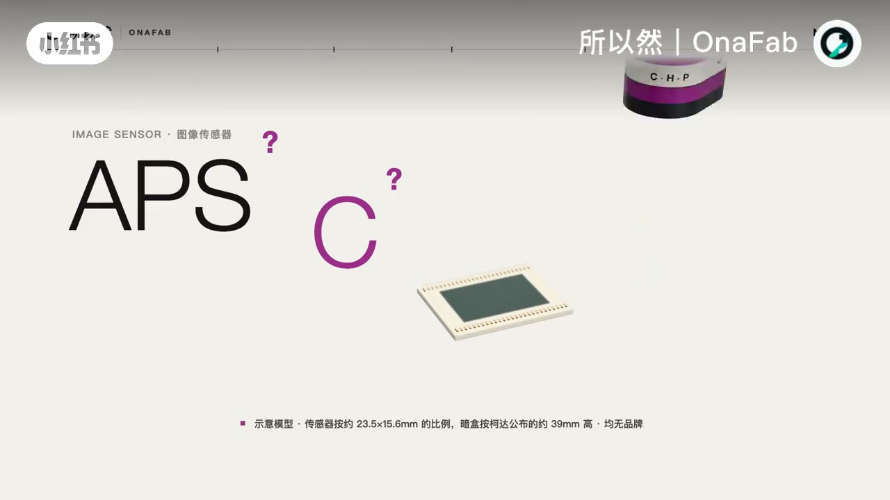
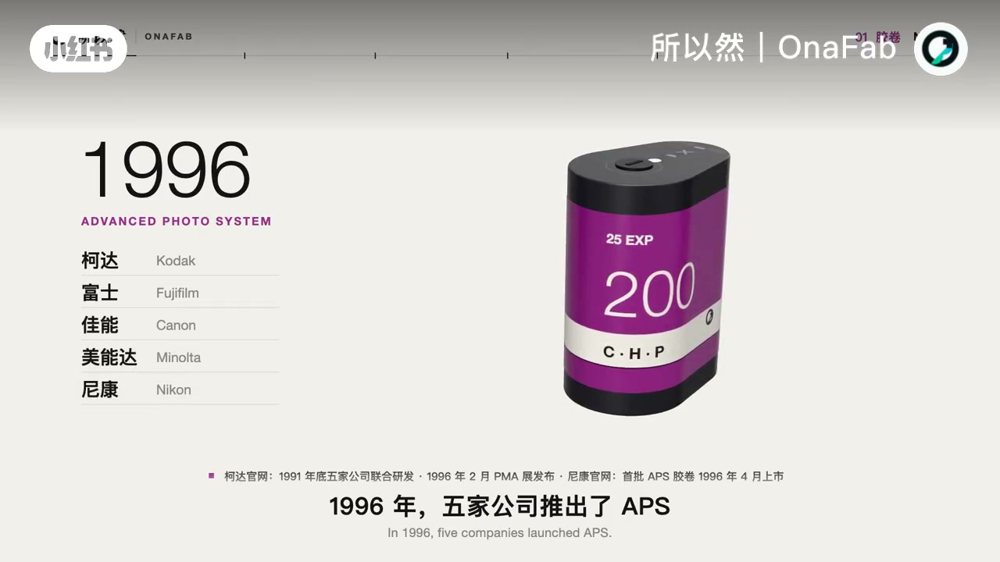
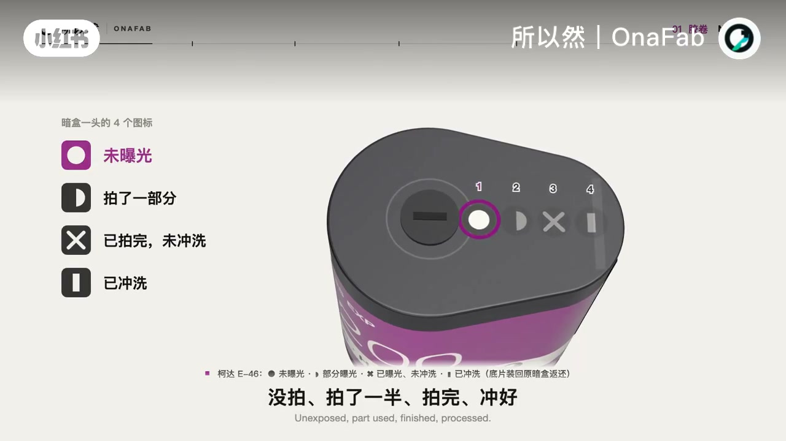
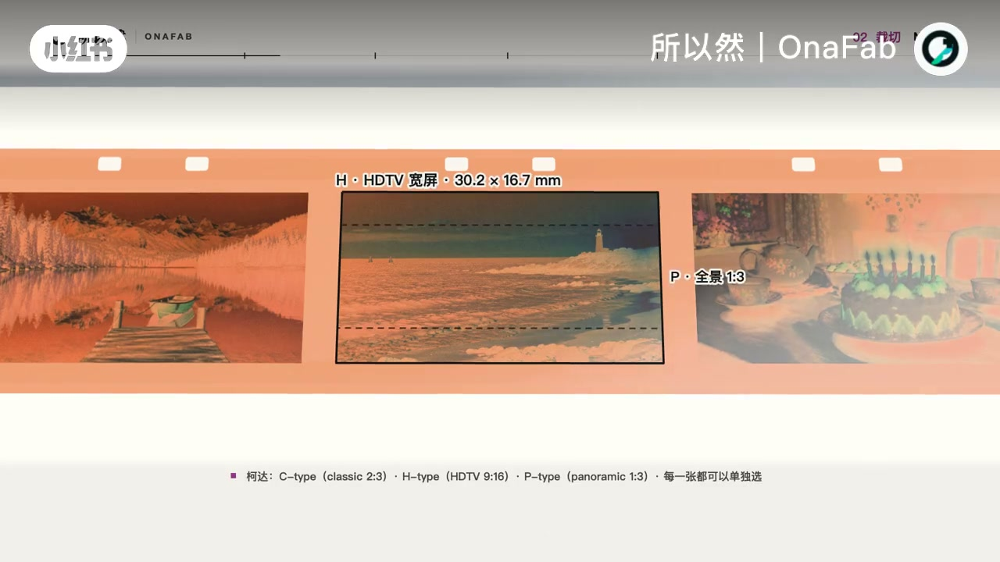
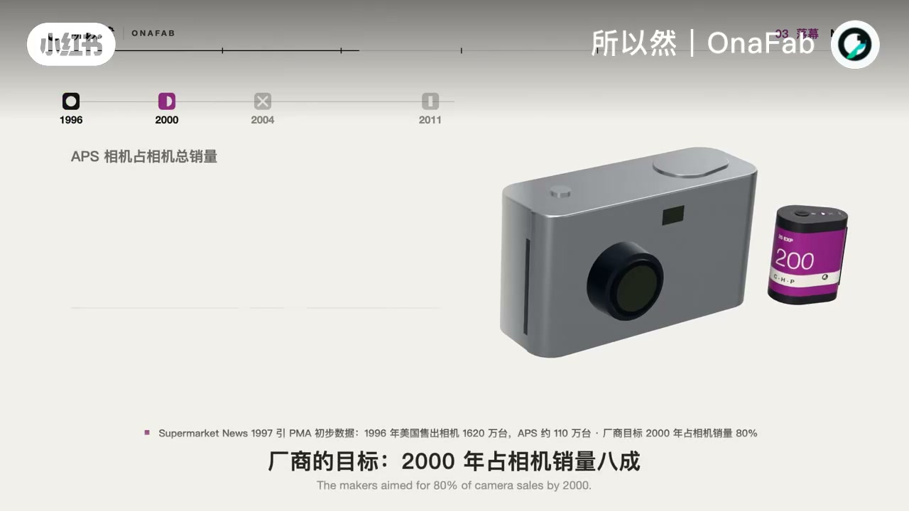
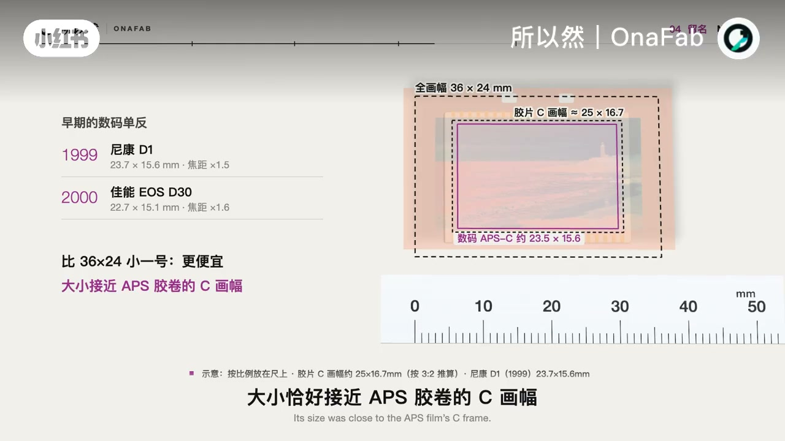
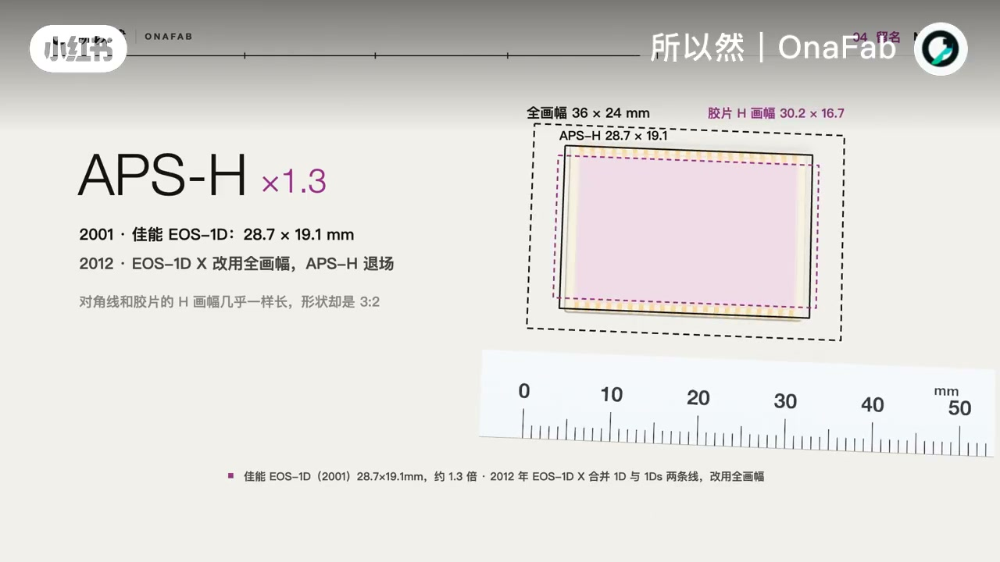
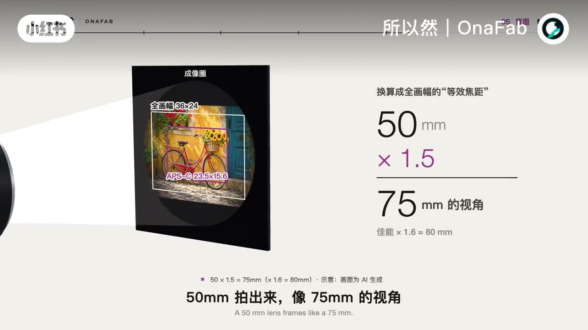

内容要点
所以然｜OnaFab 用三维示意把「APS-C」拆开：它不是天生的数码规格，而是 1996 年先进摄影系统（APS）胶卷里 Classic（经典 3:2）裁切框 留下的名字。胶卷格式失败后，早期小数码单反传感器尺寸碰巧接近那一框，「APS-C」才变成今天的传感器尺码；同一支镜头在 APS-C 上只接住成像圈中间一块，所以要乘 1.5 / 1.6 做等效焦距。
知识结构
1996 年五家厂推 APS：暗盒投片、四格状态图标、磁性层记录拍摄信息；片基本身按 H 宽屏记录。
H / C / P 三种比例可选，但底片都是 H；你的选择只是旁边记号，冲印机读记号再裁。所以 C 从第一天起就是裁出来的。
市场远未达八成目标；2004 柯达退出 APS 相机，2011 胶卷停产。早期数码单反小一号传感器接近胶卷 C 画幅，佳能从「尺寸相当」到直接写 APS-C；更大一号曾叫 APS-H（约 1.3 倍）。
同一支镜头，APS-C 只接住中间一块；焦距×1.5（佳能常×1.6）。这把尺子的「1」是全画幅，升级路径也按倍数排好。格式死了，名字成了尺码。
看见机身上的 APS-C，先把它读成「接近当年 APS 胶卷 Classic 裁切框的小传感器」——C 从来不是整卷底片，而是裁切；今天的裁切系数，是胶卷史留下的尺子。
00:00-00:40失败的胶卷留下的名字
视频开场直接把字母拆开：很多相机写着 APS-C，但 APS 是什么、C 又是什么？画面叠出「IMAGE SENSOR · 图像传感器」和约 23.5×15.6mm 比例的传感器模型，旁边是标着 C · H · P 的紫黑暗盒——整支片子的核心判断写在标题区：这是一个失败的胶卷留下来的名字。

时间拨到 1996：柯达、富士、佳能、美能达、尼康五家推出 Advanced Photo System。胶片收在约 39mm 高的暗盒里，不露片头，丢进相机就能拍。暗盒一头有四格图标——未曝光、拍了一部分、拍完未冲洗、已冲洗；胶片上还有几乎透明的磁性层（IX），把拍摄时间、闪光、加印张数等信息写在上面。口播里 Whisper 把「冲洗」听成「充足」，画面图例仍清楚对应四态。


00:40-01:08H / C / P：C 从第一天起就是裁出来的
APS 照片有三种比例：H 像宽屏电视，P 是全景，C 是 Classic——经典的 3:2。关键一句是：不管选哪种，底片上都是 H；你的选择只是旁边一个记号，重印机读到记号才去裁画面。三种照片都从同一个 H 里裁出来，所以 C 从第一天起就是裁出来的——不是整卷底片天生叫 C。

01:08-02:05胶卷死了，名字成了传感器尺码
柯达曾称这是 1963 年以来最重要的发布，厂商目标是 2000 年占相机销量八成；可第一年在美国大约只占 7%。得买新相机，胶卷冲印还贵约 15%。数码浪潮来了：2004 年柯达退出 APS 相机，2011 年最后的 APS 胶卷宣布停产——「相机还在，新胶卷没了」。视频引用尼康设计师的话：似乎没了未来。

小数码单反登场：传感器比 36×24 小一号、更便宜，大小恰好接近 APS 胶卷的 C 画幅。2003 年佳能写的是「APS-C 尺寸相当」，一年后「相当」两个字没了——名字被直接征用。可各家 APS-C 并不一样大，佳能自己也说它不是精确尺寸；更大一号曾叫 APS-H，约 1.3 倍。胶卷没了，H 和 C 成了尺码。


02:05-03:08同一支镜头只接住中间一块
同一支镜头，APS-C 只接住成像圈中间一块，所以焦距要换算：乘 1.5，佳能常乘 1.6。50 毫米拍出来，像 75 毫米的视角。这把尺子的「1」是全画幅，别的画幅都写成几倍；升级的路也沿着这把尺子排好了。

收束句把整条史线拧紧：格式死了，名字成了尺码；C 从第一天起就是裁出来的。片尾还把「全画幅」溯源到电影胶片、「一英寸」溯源到电视摄像管——提醒读者：今天嘴里的画幅名，往往都是别的媒介留下的尺子。片尾提问「你的相机，是哪种画幅？」并预告下一期宽银幕 2.39:1。